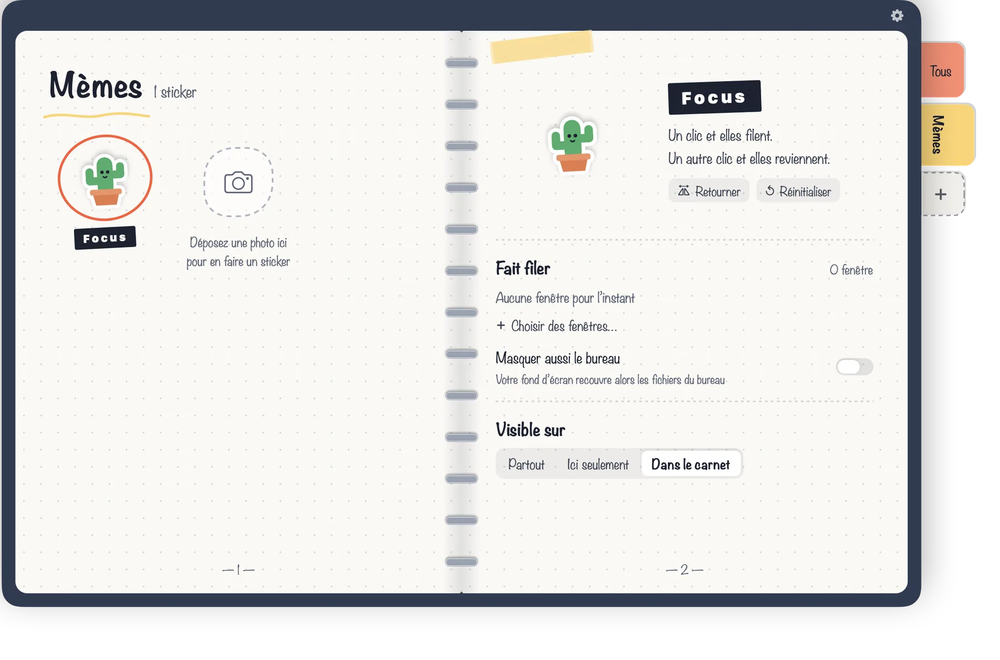

Un carnet de stickers pour le bureau de votre Mac
Un clic sur le sticker. Et les fenêtres filent.
Collez Shoo sur votre bureau et dites-lui de quelles apps ou fenêtres il s’occupe. Un clic et tout disparaît ; un autre clic et tout revient exactement à sa place.
Télécharger sur le Mac App Store

Chaque sticker s’occupe d’une partie de cette page. Cliquez sur l’un d’eux.
Un clic. Bureau net.
Essayez : choisissez un moment, puis cliquez sur le petit diable.
À votre image
Transformez n’importe quelle photo en sticker — votre chien, vos amis, votre mème préféré — et confiez à chacun sa mission.

Glissez une photo dans le carnetou cliquez simplement dessus
- Déposez une photo, Shoo la découpe sur votre Mac
- Rangez vos stickers dans vos onglets et vos couleurs
- Chaque sticker masque son propre groupe de fenêtres
Comment ça marche
Trois étapes, aucun écran de réglages.
Décollez un sticker
Faites glisser un sticker hors du carnet et posez-le où vous voulez sur le bureau.
Montrez les fenêtres
Choisissez « Choisir des fenêtres… » puis cliquez sur les fenêtres ou les apps dont ce sticker s’occupera.
Clic. Ouste !
Cliquez sur le sticker pour tout masquer. Un autre clic et tout revient.
Les petits détails qui comptent
Tout se passe sur votre Mac, dans le carnet.
- Une fenêtre ou toute l’appSafari, Chrome et Notes peuvent masquer une seule fenêtre ; les autres apps sont masquées en entier.
- Masquez aussi le bureauTant qu’un sticker est actif, votre fond d’écran recouvre les fichiers du bureau.
- Tous les bureaux ou un seulMettez un sticker sur tous les bureaux, ou gardez-le sur un seul.
- Modifiez dans le carnetRenommez, redimensionnez, faites pivoter ou retournez vos stickers sur place.
- DiscretAffichez Shoo dans le Dock, dans la barre des menus, ou nulle part.
- Onze languesEnglish, Español, Deutsch, Français, Português, Tiếng Việt, 繁體中文, 简体中文, 日本語, 한국어, ไทย.
Gratuit pour commencer
Le petit diable est à vous gratuitement, avec toutes les fonctions. Le reste se débloque une fois pour toutes, sans abonnement.
 Gratuit
Gratuit
Le petit diable rouge
- Toutes les fonctions sur un sticker
- Masquer fenêtres, apps et bureau
- Toutes les langues
 Tout débloquer
Tout débloquer
Achat unique
- 5 autres stickers dessinés à la main
- Des stickers à partir de vos photos
- Vos propres onglets et couleurs
- Autant de stickers que vous voulez

Votre bureau reste le vôtre
- Pas de compte, pas de pub, pas de pistage
- Les stickers et les réglages restent sur votre Mac
- Les photos sont découpées sur votre Mac ; rien n’est envoyé
- Shoo ne fait que masquer et afficher les fenêtres choisies ; il ne lit jamais leur contenu
Questions
Pourquoi macOS demande-t-il d’autoriser Shoo à contrôler Safari, Chrome ou Notes ?
C’est ainsi que Shoo masque une seule fenêtre de ces apps. Shoo demande seulement à l’app de masquer ou d’afficher la fenêtre choisie. Si vous refusez, Shoo masque l’app entière.
Puis-je masquer toutes les fenêtres de n’importe quelle app ?
Oui. Toute app peut être masquée en entier. Masquer une seule fenêtre fonctionne avec Safari, Chrome et Notes.
Est-ce un abonnement ?
Non. Shoo est gratuit avec le sticker du petit diable. Tout débloquer est un achat unique.